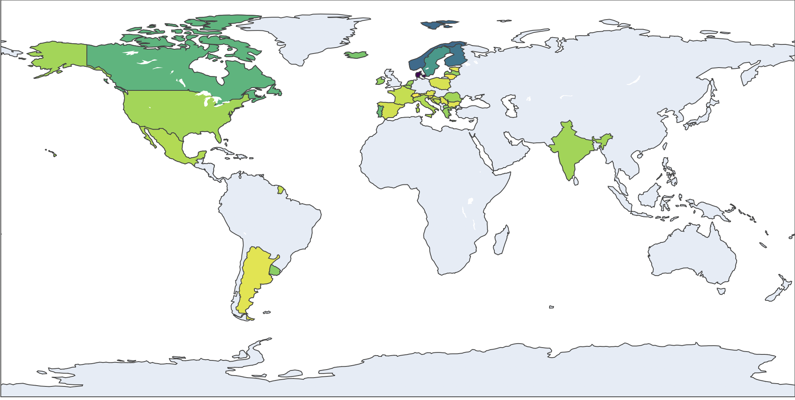
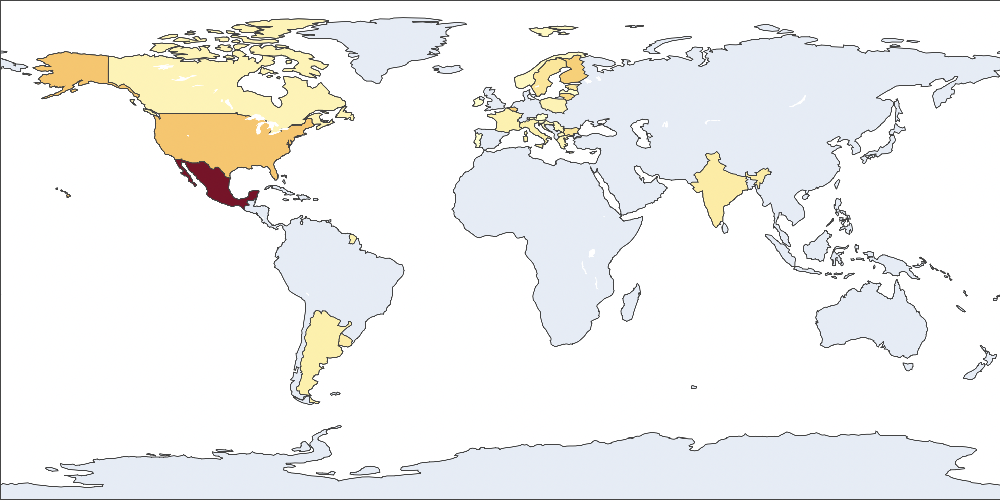
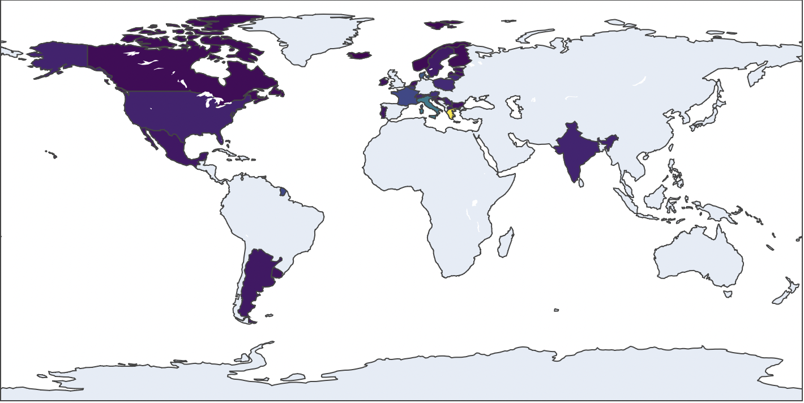
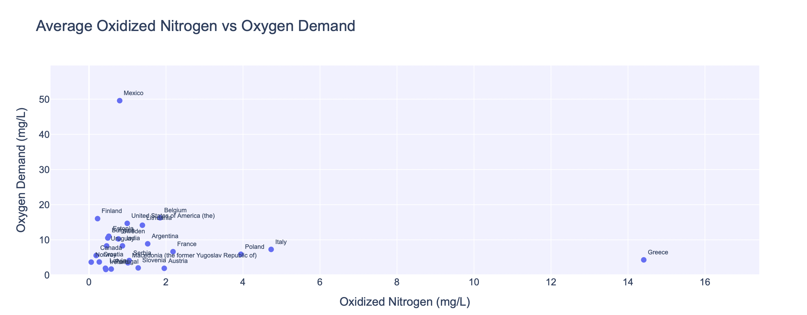
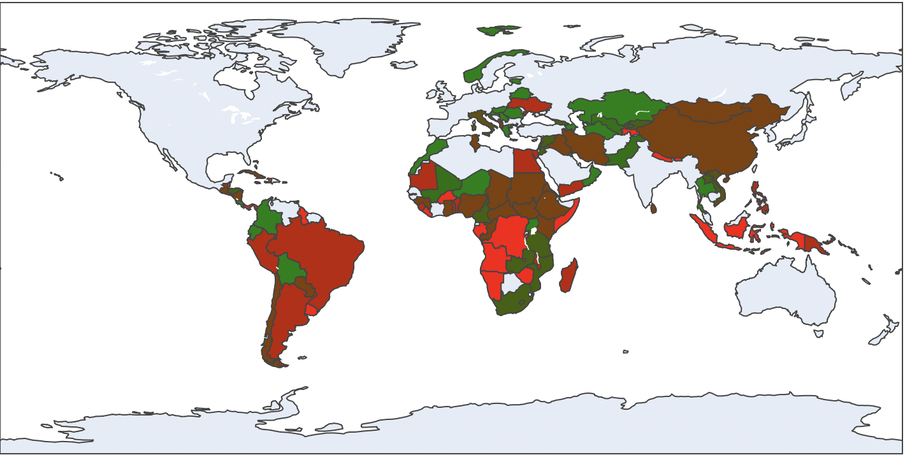

Data Visualizations
Welcome to the AquaLens data visualizations page! Here, you can explore a variety of interactive charts and maps that provide insights into global water quality and availability. These visualizations are designed to help you understand the current state of our freshwater systems and their impact on human health and the environment.
Global Water Quality Insights
The following interactive data visualizations are curated from a variety of global sources, including GEMStat, WHO, and UNICEF. They explore key dimensions of water quality such as nutrient and organic pollution, pH variation, transparency in data reporting, and public health impacts. Together, they offer insight into the state of freshwater systems around the world and their connection to environmental and human well-being.
General Water Quality and Availability

Percentage of Good Quality Water Bodies
Global data on country' water quality

Global Water Stress
Map visualizing water stress felt globally between 2016 - 2022
Countries with Highest Water Stress
Top 20 countries with highest water stress felt between 2016 - 2022
Chemical Indicators

Average pH Levels
Visualizing global pH values by country.

Oxygen Demand Map
Average biological oxygen demand in water bodies.

Oxidized Nitrogen Map
Average nitrate levels across countries, indicating nutrient pollution intensity.

Nitrogen vs Oxygen Scatter
Shows the relationship between oxidized nitrogen and oxygen demand across countries.
Health Impacts
Data Reporting & Transparency

Water Reporting Transparency
Shows how consistently countries publish water safety data based on WHO/GLAAS.